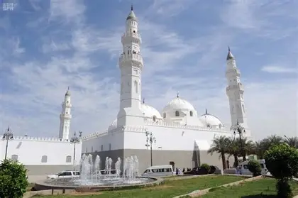

مسجد قباء هو أول مسجد أسس في الإسلام، ويقع في جنوب المدينة المنورة. خط النبي ﷺ بيده أول أحجار هذا المسجد عند وصوله مهاجراً. الصلاة فيه لها فضل عظيم، حيث قال النبي ﷺ: "من تطهر في بيته ثم أتى مسجد قباء فصلى فيه صلاة كان له كأجر عمرة".